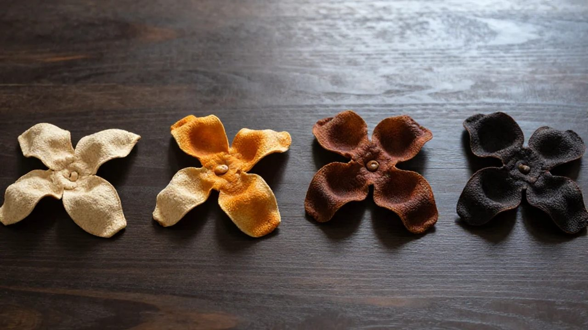
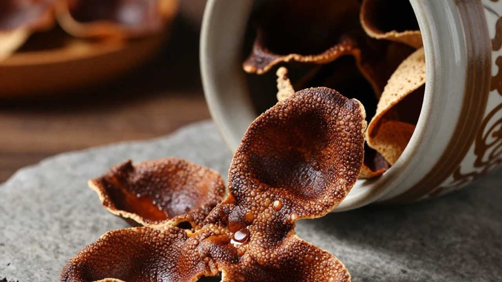
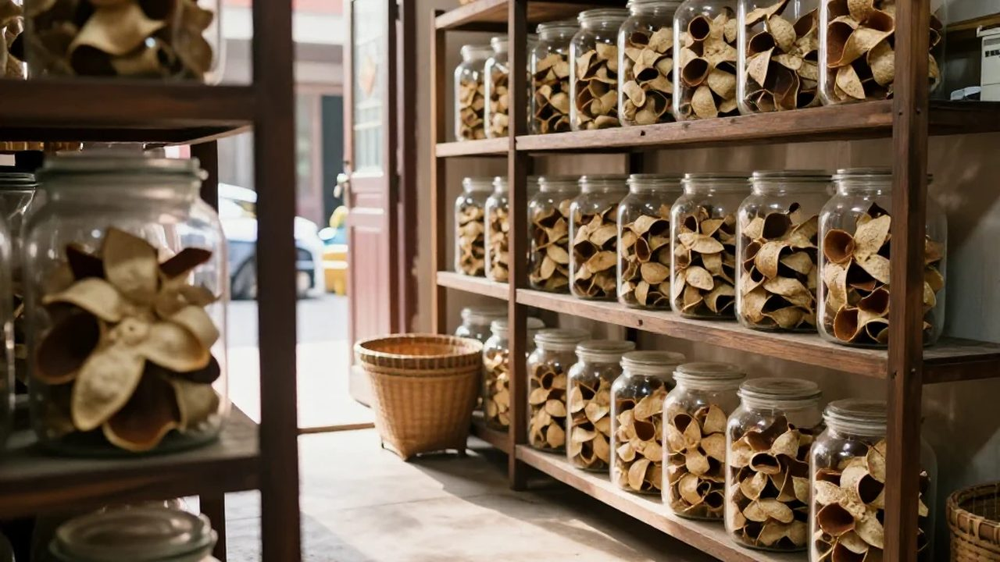

國慶剛過，江門這邊還是熱，曬場上的太陽晃得人睜不開眼。
這幾天，滢滢姐被問得最多的一句話是：「你們家的新會陳皮，年份是真的嗎？」起因大家都知道——央視財經調查曝光了陳皮年份虛標的事，新會好幾家企業直接被禁了「新會陳皮」地標商標，還上了熱搜。在陳皮村南門牌坊G04守了十幾年店，滢滢姐頭一回見來買皮的客人先掏手機查新聞，再盯着她的皮看。
一、果圍裡的兩個人：一個要真的，一個要「靈活點」
這天上午，果圍裡霧還沒散，銀洲湖那邊吹過來的風帶着鹹濕的水汽。滢滢姐帶着吳小姐去看果，順便叫了做了三十年皮的陳師傅一起。陳師傅六十出頭，曬得黝黑，手指縫裡全是柑油的味道——在新會做皮的人都認他那雙手：開皮三刀，薄厚均勻，從不傷油室。
果圍邊上，早就站着兩個人。一個是東莞常來收皮的張先生，開着大奔，笑呵呵；另一個是陳師傅前年收的小徒阿強，二十出頭，腦子活。
「滢姐、陳師傅，今年我要一批十年皮，量大，價格你給我壓一壓。市場上人家三年皮做做舊，也當十年賣，你們也靈活點嘛。」
「師父，張總講得都在理。而家曬場邊有曬足十年嘅？用鍋爐烘一烘，再燜一燜，顏色馬上就深，一年當三年賣。你睇隔籬村嗰家，舊年先起倉，今年就敢掛十五年老皮，車都換兩架喇。」
陳師傅沒吭聲，蹲下去摸了摸地上的柑，挑了顆青頭柑掂了掂，又放下了。
二、曬場上的那一聲「啪」

到了曬場，正是中午翻皮的時候。一地的大紅皮攤在竹籮上，油室在太陽底下亮晶晶的，香氣一陣一陣往上冒。吳小姐戴着袖套，正一片一片地翻，汗順着鬢角往下淌。
張先生拿起一片三年皮聞了聞，皺眉。
「這才三年的香，太生了。陳師傅，你教教阿強，幫我催一催，年份標高點，我多加點錢，大家都有賺。」
「師父，咱作坊那個老倉，天天翻曬除濕，多費人工！人家用濕倉，一個月就出效果，你就是太固執了！」
「啪！」陳師傅手裡的簸箕一下摔在地上，幾片皮彈了起來。
他臉漲得通紅，指着阿強，手指都在抖：
「我做了三十年皮，靠的就是一個真字！柑從哪條圍出來、什麼時候開的皮、曬了幾天、入了哪個倉，我本子上記得清清楚楚！你讓我拿三年的去冒十年的，我以後還敢不敢走過陳皮村這條街？」
曬場一下安靜了，只有風吹竹籮的嘩嘩聲。吳小姐趕緊去撿地上的皮，滢滢姐心裡也咯噔一下。
三、滢滢姐的動搖：一個月賺半年的錢，接不接？

說實話，滢滢姐不是沒動搖過。今年新會陳皮全產業鏈都衝到二百六十多億，家家都說自己是核心產區，網上九塊九都敢包郵。守真的，反而顯得「貴」。張先生那批貨要是接了，一個月能賺平時半年的錢。
「姐，真係唔接？」
可滢滢姐想起昨天還有個老街坊，拿着母親咳了半個月的方子來找她，點名要五年以上的二紅皮，說不敢在網上亂買，就信她店裡的。她要是賣了假年份，這不是砸自己招牌嗎？
她走過去，把簸箕撿起來，拍了拍陳師傅的背，又轉頭對張先生笑：
「張總，你要十年皮，我有，但我只能給你真的。三年就是三年，五年就是五年，倉裡哪批哪年，一物一碼你自己掃。你拿假皮回去，客人泡一次就喝出來了，以後還找你嗎？」
張先生被噎住了，點了根煙沒說話。阿強蹲在地上，頭埋得低低的。
四、老倉裡的那排大缸

晚上，作坊裡靜悄悄的，只有抽濕機嗡嗡響。陳師傅把滢滢姐叫到最裡面的老倉，掏出鑰匙開了鎖。一排大缸整整齊齊，標籤上是他手寫的字：2016年冬，大紅，會城圍。
他抓起一片，油室通透，輕輕一聞，藥香混着蜜香，直往鼻子裡鑽。
「滢姐，真嘅假不了，假嘅真不了。呢批皮我守咗十年，邊個嚟我都唔摻假。你敢賣，我就敢同你供一世。」
滢滢姐捧着那片皮，手都在發燙。吳小姐在旁邊小聲說：
「姐，張總啱啱發微信，話就按真嘅嚟，先要五十斤五年皮試吓。」
滢滢姐笑了，懸了一天的心，總算落了地。
五、那隻沒開封的缸

不過話說回來，陳師傅那間老倉最裡面，還有一隻沒開封的缸，上面落了厚厚一層灰，標籤都看不清了。滢滢姐問他那是什麼，陳師傅擺擺手，只說了四個字：
「以後再講。」
你們猜，那缸裡鎖的到底是什麼好東西？為什麼陳師傅連親徒弟都不讓碰？
常見問題
陳皮年份虛標是怎麼回事？用高溫高濕或做舊手法，把三、五年的皮在幾個月內「催」成十幾年的外觀，再按高年份的價格賣。央視財經調查曝光後，新會多家企業被禁用地標商標。
烘一烘、燜一燜，真能讓新皮「變」老皮嗎？只能變外觀。顏色可以快速加深，但內囊結構、香氣層次與活性成分都不會跟着變。喝起來常帶火氣、酸味或倉味，泡兩三道就散了。
「濕倉」和「乾倉」差在哪？乾倉是通風乾燥、靠自然溫濕度變化慢慢醇化，慢但香氣醇厚；濕倉是高溫高濕甚至密閉催陳，快但容易滋生黴菌，內裡結構被破壞。
「一物一碼」怎麼查？正規產品會給每一批皮一個溯源碼，掃碼可見產區、採收年份、加工與倉儲記錄。買之前先問能不能掃，敢給的就是底氣。
為什麼守真的反而顯得貴？因為真皮要佔資金、佔倉庫、佔時間。三年皮壓三年資金，十年皮壓十年；做舊的皮幾個月就能回款，自然能把價格打低。
買陳皮時要問哪幾句？一問產區（天馬、梅江、茶坑、東甲？），二問年份能否溯源，三問是生曬還是烘乾。三句都答得具體的賣家，通常靠得住。
結語：真的假不了
這一場風波之後，新會街頭多了很多舉着手機查新聞的客人。對守真的人來說，這其實是好事——假皮被查一次，真皮就貴一分。
想知道一片皮從果園到櫃檯要經過幾個人的手、誰在賺錢誰在熬，看這篇《一片新會陳皮的江湖》；想知道三個年份的皮該怎麼泡才不苦，翻翻這篇《秋燥養生茶飲刷屏：新會陳皮三年、五年、十年，各有各的泡法》。
下期預告：陳師傅那隻沒開封的缸，還有「乾倉」與「濕倉」一字之差背後的身價秘密——同樣標十五年，為什麼一片賣兩萬，另一片只賣兩千？咱們下期接着聊。